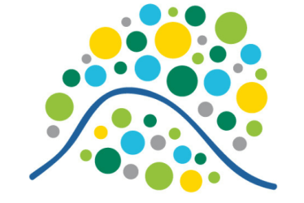

Étudiant en BTS SIO option SISR | Session 2026 [cite: 2]
Au cours de ma formation en BTS SIO SISR au Lycée de l'Hautil [cite: 82], j'ai développé une solide maîtrise technique pour concevoir, installer et maintenir des infrastructures informatiques performantes[cite: 23, 24].
Mise en œuvre d'une solution GLPI 10.0.24[cite: 95, 110]. Configuration de l'inventaire automatisé via le plugin Inventory 1.5.7 et déploiement de l'agent 1.16 sur client Debian[cite: 112, 114].
Fiche RP 1 GLPIDéploiement d'un serveur HTTP Apache2 sous Debian 13[cite: 29, 45]. Configuration du module UserDir pour l'hébergement de pages personnelles via ~/public_html[cite: 49, 51].
Fiche RP 2 Apache2
Site : Hôpital Sainte-Anne [cite: 13]
Immersion au sein de la DSI de l'un des plus grands acteurs hospitaliers parisiens pour assurer le support d'infrastructures critiques[cite: 13].
Site du GHU →Interventions de niveau 1 et 2 via Connexion Bureau à Distance (RDP) pour résoudre les incidents logiciels et réseaux sur le parc hospitalier.
Utilisation de scripts PowerShell pour le déploiement et le diagnostic du logiciel métier HM (Hôpital Manager), incluant la vérification des processus Java et des configurations IP.
Recensement et identification des ressources matérielles via GLPI (ThinkPad X1, serveurs) pour optimiser le suivi du cycle de vie des équipements.
Analyse d'imageries complexes avec précision accrue pour la détection précoce des pathologies.
Anticipation des maladies par l'analyse de données massives (Big Data) et épidémiologiques.
Ces deux années en BTS SIO SISR m'ont permis de forger une expertise solide en administration systèmes et réseaux. J'ai acquis une autonomie réelle dans le déploiement de solutions d'infrastructure et la gestion de services critiques, tout en développant une rigueur professionnelle indispensable au support utilisateur.
📍 Jouy-le-Moutier / Île-de-France